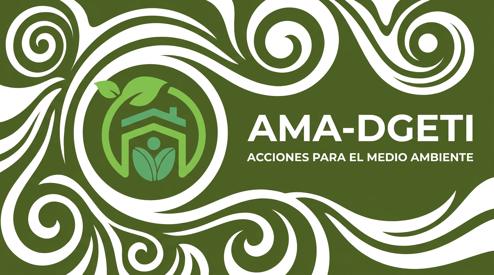

El programa AMA-DGETI (Acciones por el Medio Ambiente de la DGETI) es una estrategia institucional impulsada por la Dirección General de Educación Tecnológica Industrial y de Servicios. Su finalidad principal es despertar la conciencia ambiental y promover el desarrollo sustentable en la comunidad estudiantil, docente y de padres de familia dentro y fuera de los planteles.
Busca formar ciudadanos responsables con un compromiso real por el cuidado del medio ambiente, fomentando la integración de la educación ambiental en la vida diaria escolar mediante actividades como el reciclaje, reforestación, cuidado del agua y la divulgación científica.
El programa se ha implementado y consolidado activamente en los planteles de la DGETI desde principios del año 2021, funcionando como una estrategia transversal que se integra en el cronograma escolar de los CBTis y CETis de todo el país para reforzar la formación integral de los estudiantes frente a los desafíos ecológicos actuales.
Conocer cada una de las fechas conmemorativas que aborda el programa AMA-DGETI me beneficia enormemente al hacerme consciente de la importancia crítica de preservar nuestros recursos naturales. En mi vida cotidiana, esto influye directamente en mis hábitos: me impulsa a separar la basura, ahorrar agua, reducir mi consumo de plásticos y compartir estos conocimientos con mi familia y amigos. Es un recordatorio constante de que las pequeñas acciones individuales suman para crear un impacto global positivo en nuestro entorno.